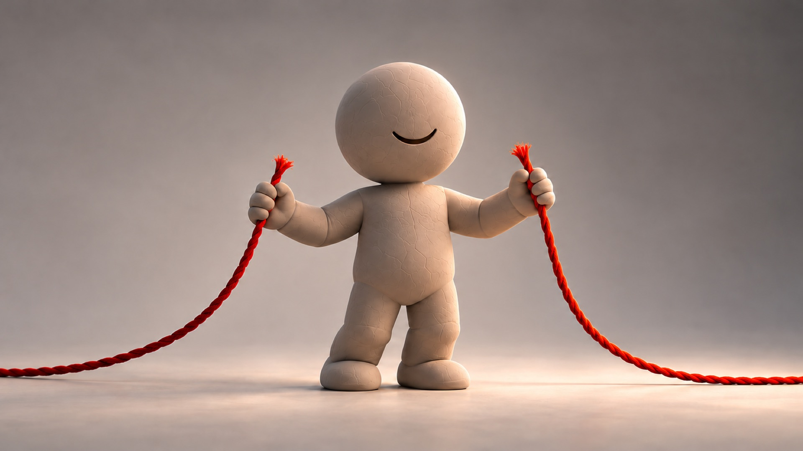
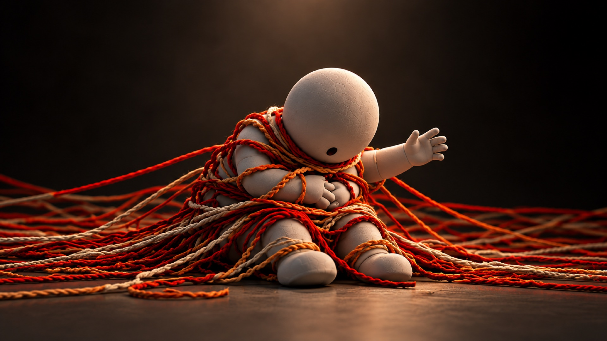
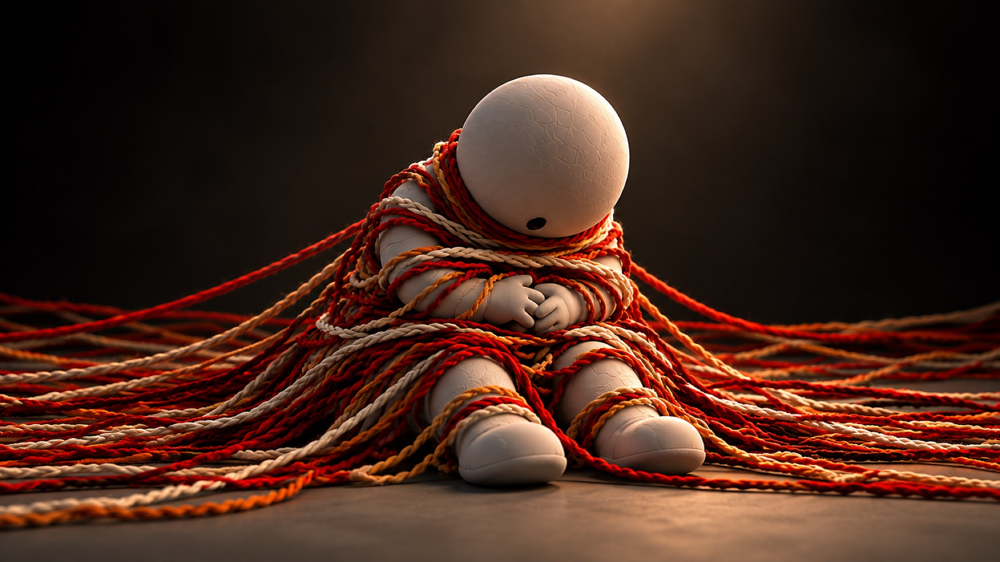
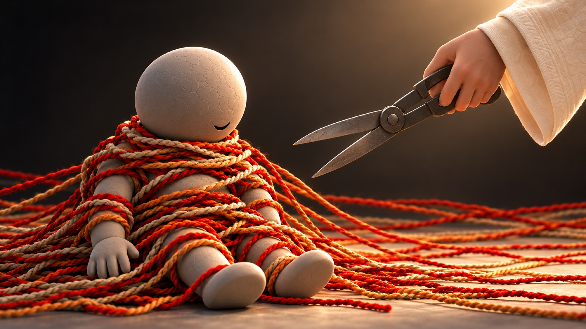
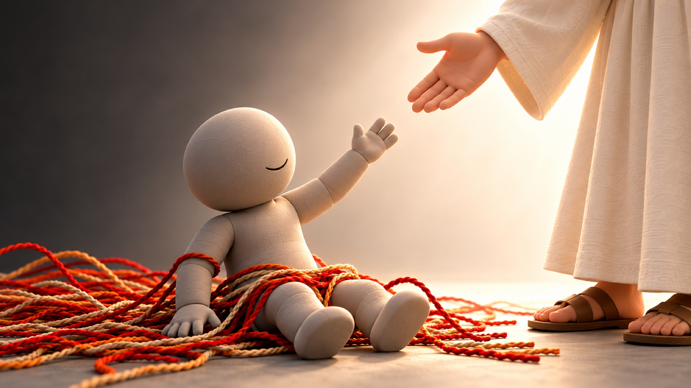
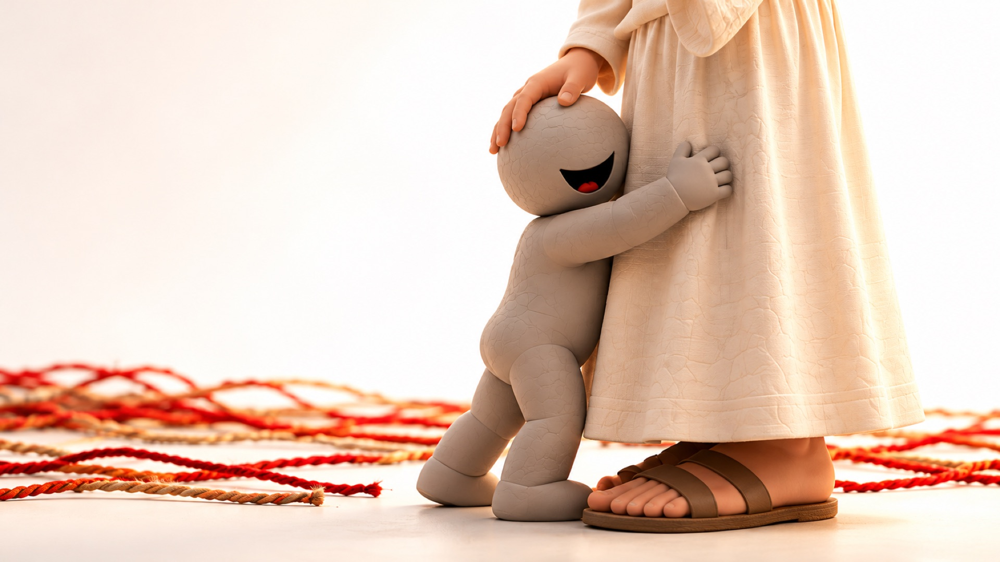

| ENGLISH | JAPANESE | SPANISH | UKRAINIAN | ARABIC |
|---|---|---|---|---|
| dark | 暗い kurai | oscuro | темний temnyi |
مُظلِم muzlim |
| rescue | 救う sukuu | rescatar | рятувати riatuvaty |
يُنقِذ yunqidh |
| kingdom | 王国 oukoku | reino | царство tsarstvo |
مَملَكة mamlaka |
| out of … into | 〜から 〜へ kara … e | de… a… | з… до… z … do |
مِن… إلى… min … ila |